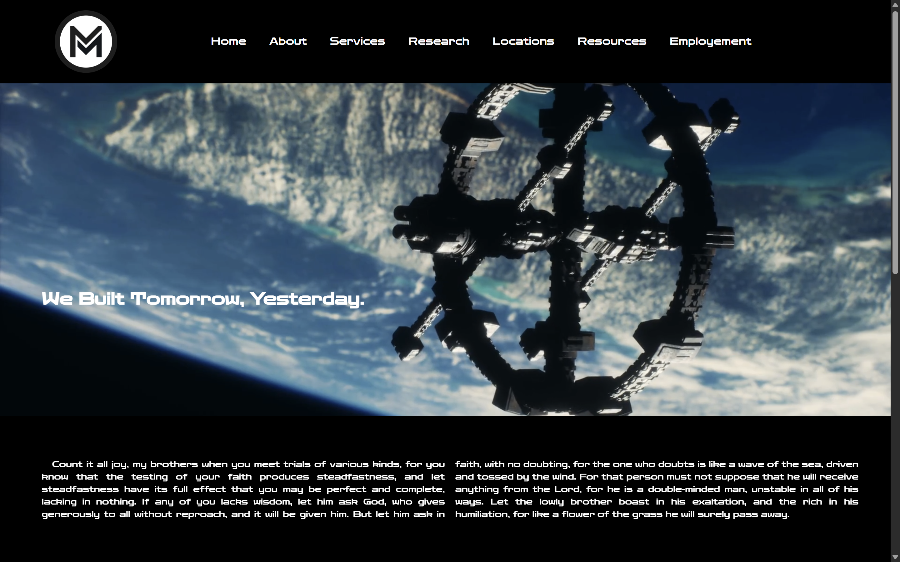
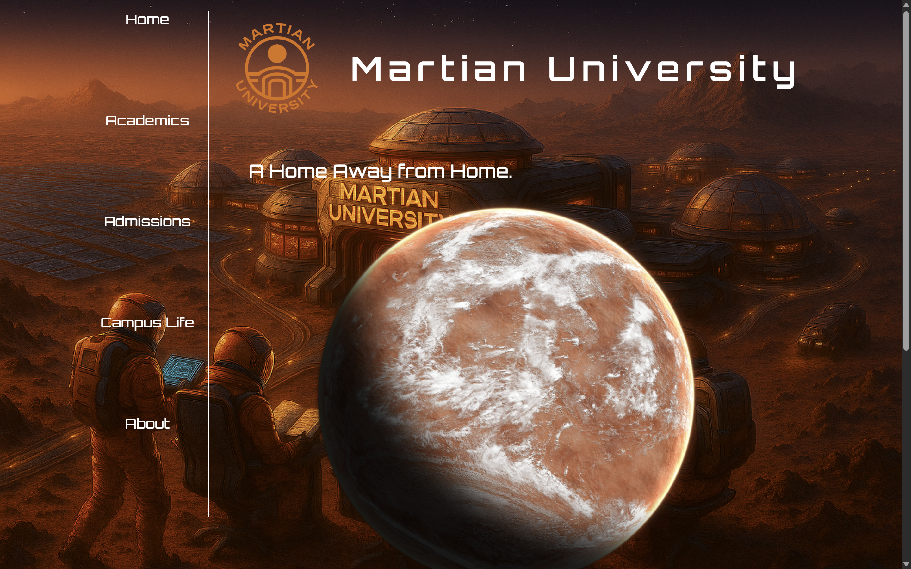

Studying Cybersecurity
At Liberty University

Markenson Industrial Website
I developed this website using HTML and CSS, completing the project in just over six hours. The design emphasizes a clean, minimalist aesthetic while maintaining a modern and stylish appearance. The site incorporates multiple interactive elements to enhance user engagement and deliver a polished, enjoyable browsing experience.
Martian University
I designed and developed a fully responsive single-page website for a fictional client, Martian University, built entirely with vanilla HTML and CSS. This project marked my first implementation of a persistent static side navigation bar combined with a visually striking parallax scrolling homepage. The result is a modern, immersive academic portal that maintains smooth performance, elegant typography—all achieved without relying on JavaScript frameworks or external libraries.
